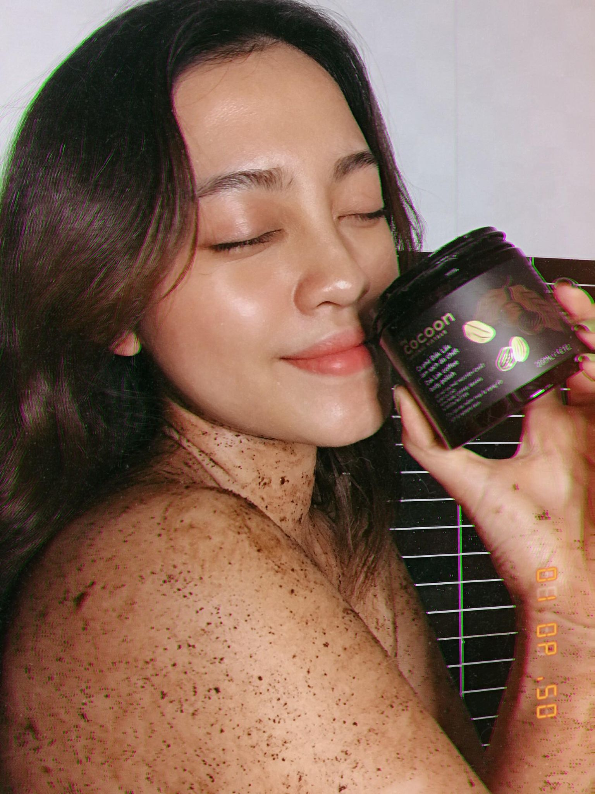
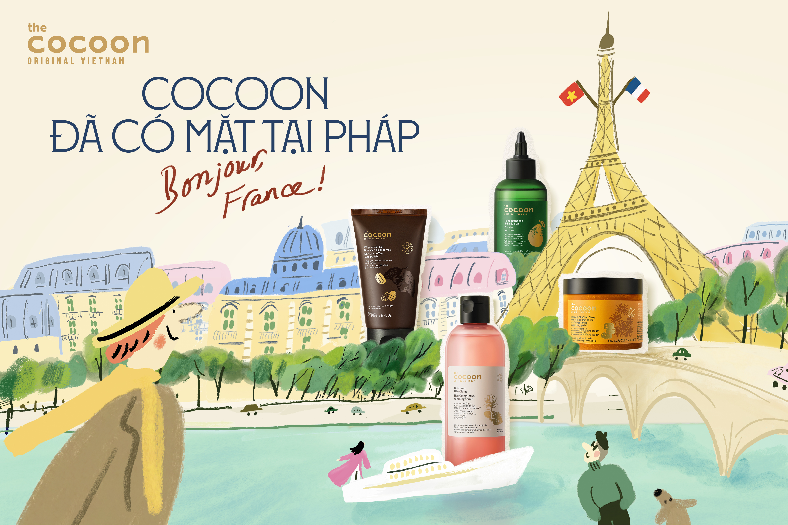
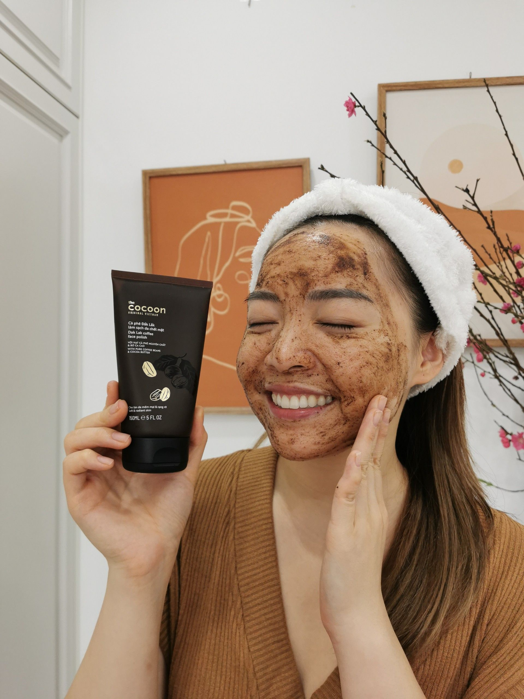
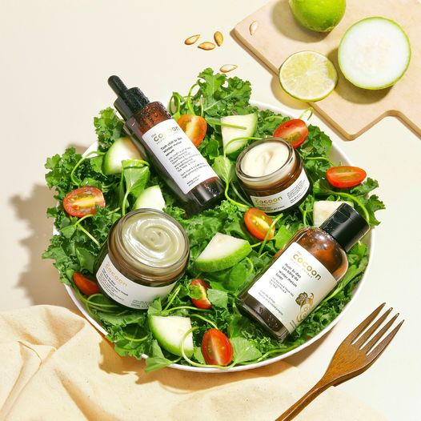
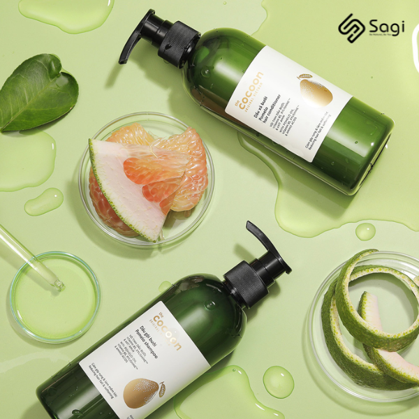

Vài “tip” giúp bạn tận hưởng trọn vẹn từng giây phút làm sạch da chết trên cơ thể cùng Cà phê Đắk Lắk
Hãy thử áp dụng một vài tip sau để gia tăng thêm những trải nghiệm thật “chill” với sản phẩm Cà phê Đắk Lắk làm sạch da chết cơ thể.
Pháp từ lâu đã được xem là một trong những trung tâm lâu đời và có ảnh hưởng lớn của ngành mỹ phẩm toàn cầu. Đất nước này sở hữu nhiều tập đoàn làm đẹp lớn cùng hệ sinh thái nghiên cứu - sản xuất phát triển, đóng vai trò quan trọng trong việc định hình tiêu chuẩn chất lượng, an toàn và xu hướng tiêu dùng tại châu Âu. Và giờ đây, thị trường này đã chính thức đón chào chúng tôi - mỹ phẩm thuần chay Cocoon.
ĐỌC BÀI VIẾT

Hãy thử áp dụng một vài tip sau để gia tăng thêm những trải nghiệm thật “chill” với sản phẩm Cà phê Đắk Lắk làm sạch da chết cơ thể.

Việc tẩy da chết tuy chỉ mất từ 10 – 15s nhưng nó sẽ giúp bạn loại bỏ các tế bào da chết trên bề mặt da một cách dễ dàng, giảm nguy cơ tắc nghẽn lỗ chân lông.

Giống như các loại da khác, da dầu cũng sẽ đạt trạng thái khỏe mạnh và mịn màng nếu được làm sạch đúng cách và được bảo vệ với các sản phẩm phù hợp.

Điều này đã mở ra cơ hội cho mỹ phẩm thuần chay từ Việt Nam bước vào một trong những trung tâm làm đẹp hàng đầu thế giới.
.png)
Thông qua việc duy trì chương trình “Chung tay cứu trợ chó mèo lang thang” cùng AAF, Cocoon mong muốn góp thêm một phần nhỏ bé trong việc...
-1.jpg)
Tiếp nối hành trình duy trì thói quen xanh, Cocoon và Trường ĐH Sư phạm TP.HCM phát động chương trình “Thu Hồi Pin Cũ – Bảo Vệ Trái Đất Xanh” lần...
